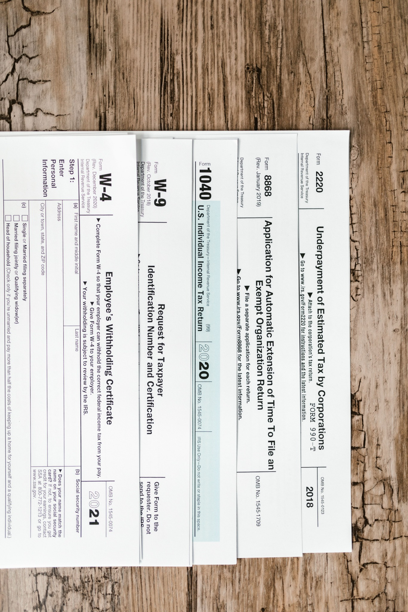

01
01Bookkeeping / Write-Up
Full-charge bookkeeping services including general journal and subsidiary ledger maintenance, bank reconciliation, and receivables and payables tracking.
TAXARTPRO INC. provides one-on-one accounting, taxation, small business consulting, financial planning, translation and notarial services with practical, personal support.
The firm was established over 30 years ago to provide efficient, expert solutions to businesses and individuals.
TAXARTPRO INC. is committed to providing a complete range of professional tax and accounting services at affordable fees. The goal is simple: every client should feel they have a trusted business advisor.
Support can be tailored to a single tax question, ongoing bookkeeping, business advisory needs, or longer-term financial planning.
The firm offers a complete range of accounting, taxation, small business consulting and financial planning services.
01Full-charge bookkeeping services including general journal and subsidiary ledger maintenance, bank reconciliation, and receivables and payables tracking.
Professional financial statements and tailored financial analysis for banks, investors, third parties and internal management use.
Year-round tax planning designed to help minimize current and future tax liabilities and reduce avoidable penalties.

04Preparation of federal, state and local tax returns for individuals and businesses at competitive, affordable rates.
 05
05Preparation of federal and state estate, gift and trust tax returns.
Business consulting, systems implementation, management support, cost controls and operational efficiency review.
Planning support to review projected income, expenses and long-term funding strategies.
Additional specialty services available to support the needs of individuals and businesses.
Call, explain the situation and receive clear next steps for your tax, accounting or business question.
Discuss your tax, accounting or business need.
Identify what is missing and what must be prepared.
Receive practical guidance and professional support.
Quick access to IRS tools, refund status, online payments, transcripts, EIN application and selected state refund pages.
These links open official IRS resources in a new tab. They are provided for convenience only.
If you are uncertain which form, payment type or online IRS tool applies to your situation, contact the office first.
Select a state to open its refund or tax department page. If your state is not listed or a page has changed, contact the office.